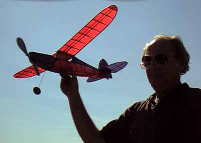
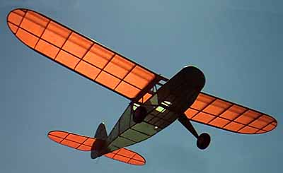

|  Bay area modelers, look out! Local sculptor Gale Wagner has started building flying models, and they are beauties! Shown at right is a 30" model he designed with a bit of inspiration from the Sig Tiger kit. Dubbed the Iron Horse due to its 80 gram empty weight, it sports a 30" wingspan and seems to fly as if it were the latest in a long line of sucessful designs. It will easily outfly the MAC field if he is not careful with power and thermals. | |
|  Another of Gale's projects is shown to the left. It started life from the Flyline Monocoupe plans but was changed extensively. The entire nose is original, inspired by " ... a little bit of Silveraire, some Aeronca, some Cub, and a few others as well." The wing is also a departure from the plans, being a mix of the drawings, and "what looks right". Empty weight, with just the prop and rubber to go, is 62 grams with a 32" span. When Gale brought this out to the field, we couldn't resist. The balance was right on, and we gave it a few test glides without a prop. Now finished, it is a real floater, and is restricted to flying indoors at Moffett for fear of loss. |
Copyright 1999, Thayer Syme. All rights reserved